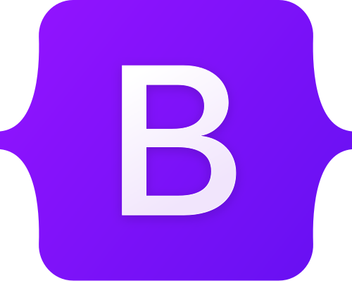

Bootstrap (formerly Twitter Bootstrap) is a free and open-source CSS framework directed at responsive, mobile-first front-end web development. It contains HTML, CSS and (optionally) JavaScript-based design templates for typography, forms, buttons, navigation, and other interface components.
